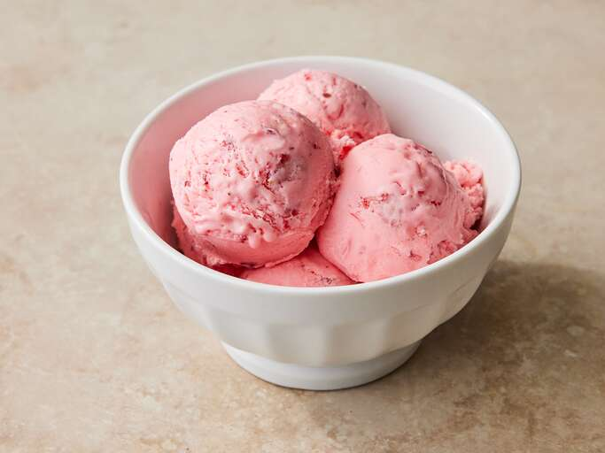

Strawberry Ice cream

Description
This strawberry ice cream is super easy to make. This recipe doesn't use an egg-custard base but still tastes rich and creamy.
Ingredients
These are the simple ingredients you’ll need to make this homemade strawberry ice cream recipe:
-
Strawberries: This homemade ice cream starts with two cups of mashed fresh strawberries.
-
Milk and cream: Whole milk and heavy cream are essential to this rich homemade strawberry ice cream.
-
Sugar: You’ll need a cup of white sugar for this sweet, fruity dessert.
-
Vanilla and salt: Vanilla extract and salt enhance the overall flavor of the strawberry ice cream.
-
Food coloring (optional): While red food coloring isn’t required, it helps achieve the vibrant color you normally associate with strawberry ice cream.
How to Make Homemade Strawberry Ice Cream
-
STEP 1
Put the strawberries in a food processor or blender. Whizz to a purée, then add the lemon juice to taste – if the strawberries are quite tart you’ll only need a little.
-
STEP 2
Warm the cream and milk in a pan until just steaming, not boiling. Whisk the sugar and egg yolks in a bowl for a minute or two until pale yellow. Slowly pour the hot cream mixture into the eggs, whisking as you do. Once fully incorporated, strain through a sieve back into the pan. Gently cook over a low-medium heat until it thickens slightly – it should coat the back of your spoon and leave a channel if you run your finger through it (this will happen at about 82-85C). Be careful not to overcook it as the eggs will scramble. Transfer to a bowl. Cover and cool for 10 mins, then chill for 1 hr
-
STEP 3
Stir the strawberry purée and vanilla through the cold custard. Taste to see if it needs a little more lemon or vanilla.
-
STEP 4
Freeze the ice cream in an ice cream maker, or container in the freezer. If you don’t have an ice cream maker, freeze for 4 hrs, whisking vigorously or blending in a food processor every hour to remove any ice crystals. Will keep in the freezer for up to two months.